pak::pkg_install(c("dplyr","tidyr","ggplot2","xgboost","shapviz","zoo","plm"), ask = FALSE)
library(dplyr)
library(tidyr)
library(ggplot2)
library(xgboost)
library(shapviz)
library(zoo)
library(plm)
set.seed(1234)
# Helper: origination quarter -> months since 2021-Q1
quarter_to_months <- function(q) {
year <- as.integer(substr(q, 1, 4))
qnum <- as.integer(substr(q, 7, 7))
(year - 2021L) * 12L + (qnum - 1L) * 3L
}
# Helper: months since 2021-Q1 -> calendar quarter label
months_to_quarter <- function(m) {
year <- 2021L + m %/% 12L
qnum <- (m %% 12L) %/% 3L + 1L
paste0(year, "-Q", qnum)
}Root Cause Analysis in a Loan Portfolio: A Structured Approach
Credit Risk Analytics
Portfolio Management
Causal Inference
R
When portfolio delinquencies start climbing, the instinct is to act fast — tighten cutoffs, reduce exposure, and pause originations. But acting without diagnosis is expensive. Tightening across the board penalises good segments while leaving actual problem pockets untouched. A structured root cause analysis (RCA) decomposes deterioration into its sources: which cohorts are driving losses, why, and what interventions are worth their cost.
This post builds a two-phase RCA framework on a synthetic portfolio that evolves through a realistic credit cycle — a period of policy relaxation during a benign macro environment, followed by a macro downturn that hits the riskier cohorts hardest. Each phase has a distinct analytical signature and calls for different remediation actions.
Synthetic Data Generating Process
The DGP simulates 12 origination quarters (2021-Q1 through 2023-Q4) across three phases.
Phase 1 — Stable baseline (2021). Conservative origination policy: Prime-heavy segment mix, standard DTI tolerance, Direct-channel dominant. Macro is benign (low rates, low unemployment, positive HPI). This is the reference state.
Phase 2 — Policy relaxation (2022). In a still-benign macro environment the bank loosens its DTI acceptance threshold for Near-Prime borrowers and grows origination volume through digital partner channels. The Near-Prime share of new bookings rises from ~30% to ~41%; the accepted DTI distribution for that segment shifts upward from a mean of 38% to 44%. Credit quality drifts down — not because macro changed, but because origination policy did.
Phase 3 — Macro downturn (2023). Rates rise and unemployment climbs. The origination policy is not reversed. The riskier accounts booked during Phase 2 — carrying higher DTI and belonging to segments with structurally higher macro sensitivity — suffer disproportionately. The same macro shock hits all cohorts simultaneously, but the 2022 relaxed-policy cohorts amplify it.
Default probability mechanics. Each account’s 12-month default outcome is drawn from a logistic DGP using origination-time macro — the rates, unemployment, and HPI conditions that prevailed when the account was booked. A 2021-Q1 cohort is underwritten into a 0.10% rate environment; a 2023-Q3 cohort faces 3.25%. The segment-specific macro sensitivity coefficients (Near-Prime 2×, Subprime 3× the Prime baseline for unemployment; similar ratios for rates) ensure that the riskier segments are hit harder by the same macro conditions at origination.
The analysis will focus on key tools in the RCA toolkit: vintage curves, shift-share decomposition, SHAP values from an XGBoost default model, roll rates, and fixed-effects panel regression. Each diagnostic sheds light on a different facet of the deterioration, and together they triangulate the root causes.
# ── Macro schedule: 12 quarters across 3 phases ───────────────────────────────
macro_schedule <- tribble(
~origination_quarter, ~macro_unemployment, ~macro_rate, ~hpi_yoy,
# Phase 1 — stable baseline
"2021-Q1", 3.5, 0.10, 9.0,
"2021-Q2", 3.5, 0.10, 8.5,
"2021-Q3", 3.4, 0.10, 8.0,
"2021-Q4", 3.4, 0.10, 7.5,
# Phase 2 — policy relaxation (rates still low; HPI softening but not crashing)
"2022-Q1", 3.5, 0.25, 6.5,
"2022-Q2", 3.5, 0.25, 6.0,
"2022-Q3", 3.6, 0.50, 5.5,
"2022-Q4", 3.6, 0.50, 5.0,
# Phase 3 — macro downturn
"2023-Q1", 4.0, 1.75, 1.5,
"2023-Q2", 4.5, 2.50, -1.0,
"2023-Q3", 5.0, 3.25, -3.0,
"2023-Q4", 5.5, 3.50, -4.0
)
# Label each quarter with its policy phase
macro_experienced <- macro_schedule |>
arrange(origination_quarter) |>
mutate(
policy_phase = case_when(
origination_quarter %in% paste0("2021-Q", 1:4) ~ "stable",
origination_quarter %in% paste0("2022-Q", 1:4) ~ "relaxed",
TRUE ~ "downturn"
)
)
quarter_levels <- macro_experienced$origination_quarter
phase_colours <- c(stable = "#2c7bb6", relaxed = "#fdae61", downturn = "#d7191c")
macro_experienced |>
select(origination_quarter, policy_phase,
macro_unemployment, macro_rate, hpi_yoy) |>
mutate(across(where(is.numeric), \(x) round(x, 2)))# A tibble: 12 × 5
origination_quarter policy_phase macro_unemployment macro_rate hpi_yoy
<chr> <chr> <dbl> <dbl> <dbl>
1 2021-Q1 stable 3.5 0.1 9
2 2021-Q2 stable 3.5 0.1 8.5
3 2021-Q3 stable 3.4 0.1 8
4 2021-Q4 stable 3.4 0.1 7.5
5 2022-Q1 relaxed 3.5 0.25 6.5
6 2022-Q2 relaxed 3.5 0.25 6
7 2022-Q3 relaxed 3.6 0.5 5.5
8 2022-Q4 relaxed 3.6 0.5 5
9 2023-Q1 downturn 4 1.75 1.5
10 2023-Q2 downturn 4.5 2.5 -1
11 2023-Q3 downturn 5 3.25 -3
12 2023-Q4 downturn 5.5 3.5 -4 # ── Cohort composition rules ───────────────────────────────────────────────────
# prime_share + sub_share define segment mix; near_prime = 1 - prime - sub.
# digital_share: fraction of volume via digital partner channels.
#
# Policy relaxation mechanics (2022):
# - digital_share grows as bank expands via broker/fintech partners
# - prime_share falls as the loosened DTI threshold admits more Near-Prime
# - n_accounts grows: lower bar attracts more applicants
cohort_specs <- tribble(
~origination_quarter, ~n_accounts, ~digital_share, ~prime_share, ~sub_share,
"2021-Q1", 1000, 0.20, 0.55, 0.15,
"2021-Q2", 1050, 0.20, 0.55, 0.15,
"2021-Q3", 1100, 0.22, 0.54, 0.15,
"2021-Q4", 1100, 0.22, 0.54, 0.15,
"2022-Q1", 1300, 0.28, 0.50, 0.16,
"2022-Q2", 1500, 0.35, 0.47, 0.16,
"2022-Q3", 1700, 0.42, 0.44, 0.17,
"2022-Q4", 1800, 0.48, 0.42, 0.17,
"2023-Q1", 1700, 0.48, 0.41, 0.17,
"2023-Q2", 1600, 0.47, 0.41, 0.17,
"2023-Q3", 1500, 0.46, 0.42, 0.17,
"2023-Q4", 1400, 0.45, 0.42, 0.17
)# ── Account-level origination data ────────────────────────────────────────────
gen_cohort <- function(spec, macro) {
n <- spec$n_accounts
dshare <- spec$digital_share
pphase <- macro$policy_phase
prime_share <- spec$prime_share
sub_share <- spec$sub_share
np_share <- 1 - prime_share - sub_share
segment <- sample(c("Prime","Near-Prime","Subprime"), n, replace = TRUE,
prob = c(prime_share, np_share, sub_share))
channel <- sample(c("Direct","Digital-Broker","Digital-Fintech"), n, replace = TRUE,
prob = c(1 - dshare, dshare * 0.6, dshare * 0.4))
# Near-Prime credit scores drift slightly lower under relaxed policy
# as the bank accepts borrowers it previously screened out
np_score_mean <- if (pphase == "stable") 652L else 645L
credit_score <- case_when(
segment == "Prime" ~ round(pmin(800, pmax(680, rnorm(n, 740, 30)))),
segment == "Near-Prime" ~ round(pmin(679, pmax(620, rnorm(n, np_score_mean, 25)))),
TRUE ~ round(pmin(619, pmax(580, rnorm(n, 595, 15))))
)
# Near-Prime DTI shifts from mean 38% (standard policy) to 44% (relaxed).
# This is a selection effect: the bank now approves borrowers whose DTI
# would have been rejected at the old threshold. No individual DTI is modified;
# the distribution of ACCEPTED DTIs simply shifts rightward.
np_dti_mean <- if (pphase == "stable") 0.38 else 0.44
dti <- case_when(
segment == "Prime" ~ pmin(0.65, pmax(0.20, rnorm(n, 0.28, 0.05))),
segment == "Near-Prime" ~ pmin(0.65, pmax(0.20, rnorm(n, np_dti_mean, 0.06))),
TRUE ~ pmin(0.65, pmax(0.20, rnorm(n, 0.50, 0.06)))
)
# Digital channels carry lower income-verification rates
income_verified <- rbinom(n, 1, ifelse(channel == "Direct", 0.95, 0.65))
tibble(
account_id = seq_len(n),
origination_quarter = spec$origination_quarter,
policy_phase = pphase,
segment, channel, credit_score, dti, income_verified,
macro_unemployment = macro$macro_unemployment,
macro_rate = macro$macro_rate,
hpi_yoy = macro$hpi_yoy
)
}
accounts <- purrr::map2_dfr(
purrr::transpose(cohort_specs),
purrr::transpose(
left_join(cohort_specs, macro_experienced, by = "origination_quarter") |>
select(all_of(names(macro_experienced)))
),
gen_cohort
) |>
mutate(account_id = row_number())
accounts |>
group_by(origination_quarter, policy_phase) |>
summarise(
n = n(),
avg_score = round(mean(credit_score)),
avg_dti = round(mean(dti), 3),
iv_rate = round(mean(income_verified), 3),
digital_share = round(mean(channel != "Direct"), 3),
np_share = round(mean(segment == "Near-Prime"), 3),
macro_rate = round(first(macro_rate), 2),
macro_unemp = round(first(macro_unemployment), 2),
.groups = "drop"
)# A tibble: 12 × 10
origination_quarter policy_phase n avg_score avg_dti iv_rate
<chr> <chr> <int> <dbl> <dbl> <dbl>
1 2021-Q1 stable 1000 690 0.347 0.885
2 2021-Q2 stable 1050 693 0.339 0.888
3 2021-Q3 stable 1100 690 0.348 0.89
4 2021-Q4 stable 1100 692 0.343 0.879
5 2022-Q1 relaxed 1300 683 0.377 0.857
6 2022-Q2 relaxed 1500 683 0.375 0.861
7 2022-Q3 relaxed 1700 678 0.382 0.824
8 2022-Q4 relaxed 1800 679 0.381 0.789
9 2023-Q1 downturn 1700 678 0.382 0.799
10 2023-Q2 downturn 1600 676 0.387 0.802
11 2023-Q3 downturn 1500 674 0.391 0.811
12 2023-Q4 downturn 1400 678 0.38 0.819
# ℹ 4 more variables: digital_share <dbl>, np_share <dbl>, macro_rate <dbl>,
# macro_unemp <dbl># ── Default probability (logistic DGP) ───────────────────────────────────────
#
# Segment-specific macro sensitivity:
# Near-Prime is 2x as sensitive to unemployment and 2.5x to rates as Prime.
# Subprime is 3x (unemployment) and 4x (rates).
#
# This captures the empirical regularity that borrowers with less financial
# buffer — higher DTI, thinner savings — are more exposed to income shocks
# (unemployment) and payment-shock risk (rate increases on variable-rate debt).
#
# The default probability uses origination-time macro — the environment
# the cohort was underwritten into. 2023 cohorts are riskier because they
# originated when rates and unemployment were already elevated.
logit_p <- with(accounts,
-5.0
- 0.008 * (credit_score - 700)
+ 3.0 * dti
- 1.2 * income_verified
+ 0.40 * (channel == "Digital-Broker")
+ 0.55 * (channel == "Digital-Fintech")
+ 0.60 * (segment == "Subprime")
+ 0.20 * (segment == "Near-Prime")
# Macro sensitivity — Prime baseline + segment multipliers
+ macro_unemployment * (0.08
+ 0.08 * (segment == "Near-Prime") # NP: 0.16 total
+ 0.16 * (segment == "Subprime")) # Sub: 0.24 total
+ macro_rate * (0.04
+ 0.06 * (segment == "Near-Prime") # NP: 0.10 total
+ 0.12 * (segment == "Subprime")) # Sub: 0.16 total
- 0.03 * hpi_yoy
)
accounts$default_prob <- plogis(logit_p)
accounts$default_12m <- rbinom(nrow(accounts), 1, accounts$default_prob)
# Cohort-level default rates — should show clear phase gradient
accounts |>
group_by(origination_quarter, policy_phase) |>
summarise(
n = n(),
default_rate = scales::percent(mean(default_12m), accuracy = 0.1),
.groups = "drop"
)# A tibble: 12 × 4
origination_quarter policy_phase n default_rate
<chr> <chr> <int> <chr>
1 2021-Q1 stable 1000 2.9%
2 2021-Q2 stable 1050 2.2%
3 2021-Q3 stable 1100 2.4%
4 2021-Q4 stable 1100 2.6%
5 2022-Q1 relaxed 1300 4.7%
6 2022-Q2 relaxed 1500 2.8%
7 2022-Q3 relaxed 1700 3.4%
8 2022-Q4 relaxed 1800 3.8%
9 2023-Q1 downturn 1700 6.5%
10 2023-Q2 downturn 1600 6.7%
11 2023-Q3 downturn 1500 9.1%
12 2023-Q4 downturn 1400 8.9% # ── Monthly panel (MOB 1–24) ───────────────────────────────────────────────────
# Behavioral features (utilization, min_pay_ratio) deteriorate in the
# 6 months leading up to default — these are SYMPTOMS, useful for early
# warning but not causal root causes.
panel <- accounts |>
slice(rep(seq_len(n()), each = 24)) |>
mutate(mob = rep(1:24, times = nrow(accounts))) |>
group_by(account_id) |>
mutate(
default_mob = if_else(
first(default_12m) == 1L,
as.integer(pmin(24L, pmax(3L, round(rnorm(1, 13, 4))))),
NA_integer_
),
# Phase-adjusted baselines: relaxed cohorts carry higher utilisation and
# lower payment discipline from origination; downturn cohorts worse still.
phase_util_bump = case_when(
first(policy_phase) == "relaxed" ~ 0.05,
first(policy_phase) == "downturn" ~ 0.09,
TRUE ~ 0.00
),
phase_mpr_drag = case_when(
first(policy_phase) == "relaxed" ~ 0.04,
first(policy_phase) == "downturn" ~ 0.08,
TRUE ~ 0.00
),
util_base = case_when(
first(segment) == "Prime" ~ 0.35,
first(segment) == "Near-Prime" ~ 0.60,
TRUE ~ 0.75
) + phase_util_bump,
months_to_default = default_mob - mob,
utilization = pmin(1, pmax(0,
util_base
+ if_else(!is.na(default_mob) & months_to_default <= 6 & months_to_default >= 0,
(6 - months_to_default) * 0.04, 0)
+ rnorm(n(), 0, 0.03)
)),
mpr_base = case_when(
first(segment) == "Prime" ~ 0.85,
first(segment) == "Near-Prime" ~ 0.65,
TRUE ~ 0.50
) - phase_mpr_drag,
min_pay_ratio = pmin(1, pmax(0,
mpr_base
- if_else(!is.na(default_mob) & months_to_default <= 6 & months_to_default >= 0,
(6 - months_to_default) * 0.05, 0)
+ rnorm(n(), 0, 0.03)
))
) |>
ungroup() |>
select(-months_to_default, -util_base, -mpr_base,
-phase_util_bump, -phase_mpr_drag, -default_prob)The panel contains 402,000 account-month observations across 16,750 accounts originated over 12 quarters.
DGP at a Glance
Below charts summarise the synthetic environment before the analysis begins: the macro backdrop across all 12 quarters, and the cohort default rates that the analysis will set out to explain.
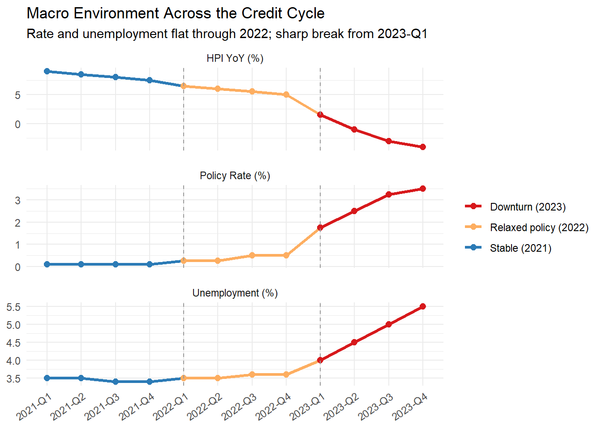
Macro conditions are kept flat through all of 2022. This gives the analysis clean boundaries: any credit deterioration in the 2021-Q4 → 2022-Q2 comparison cannot be attributed to macro and must trace to origination policy.
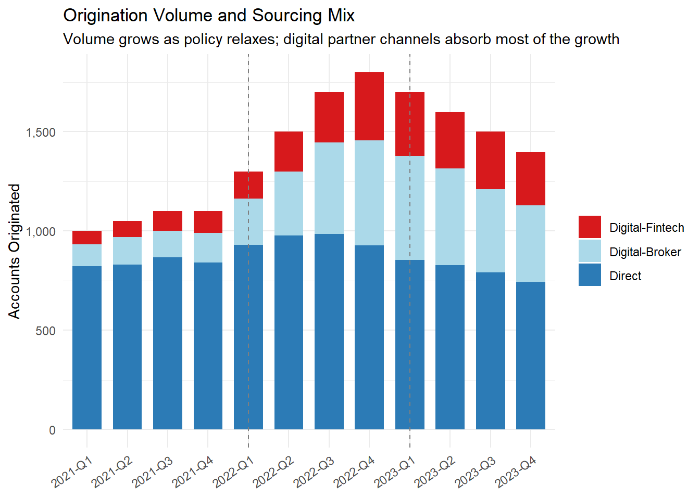
A relaxed DTI threshold leads to the increased digital broker and fintech partnership contribution, which come with looser underwriting standards and lower income-verification rates.
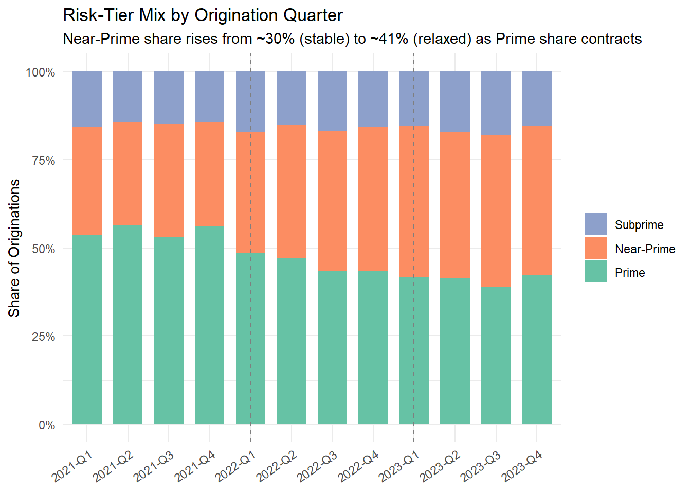
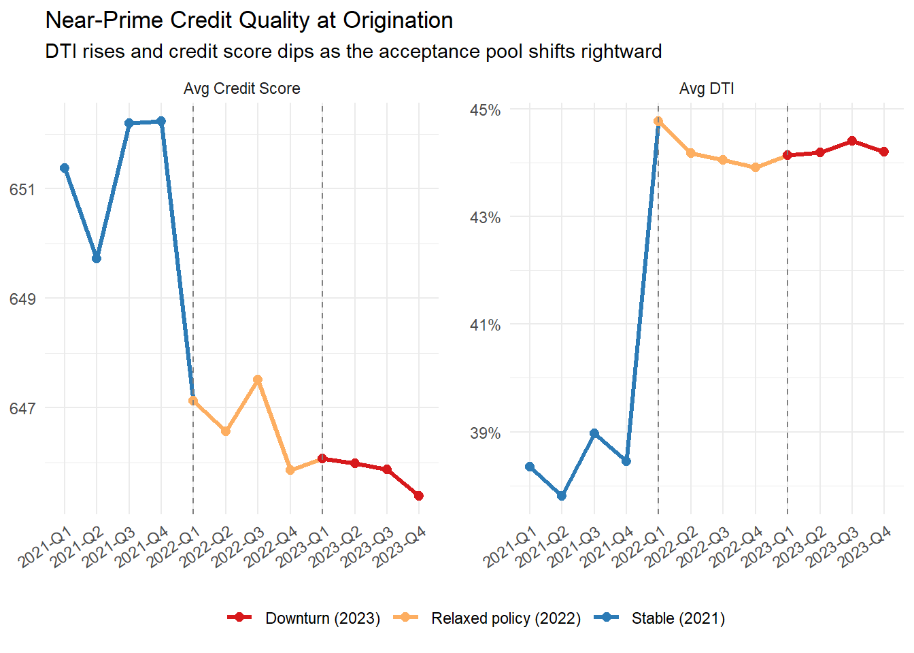
The quality drift is a selection effect, not a behavioral change. Increased Near-Prime approvals leads to an in crease in overall DTI and reduced average credit score. Both move in the direction that predicts higher defaults.
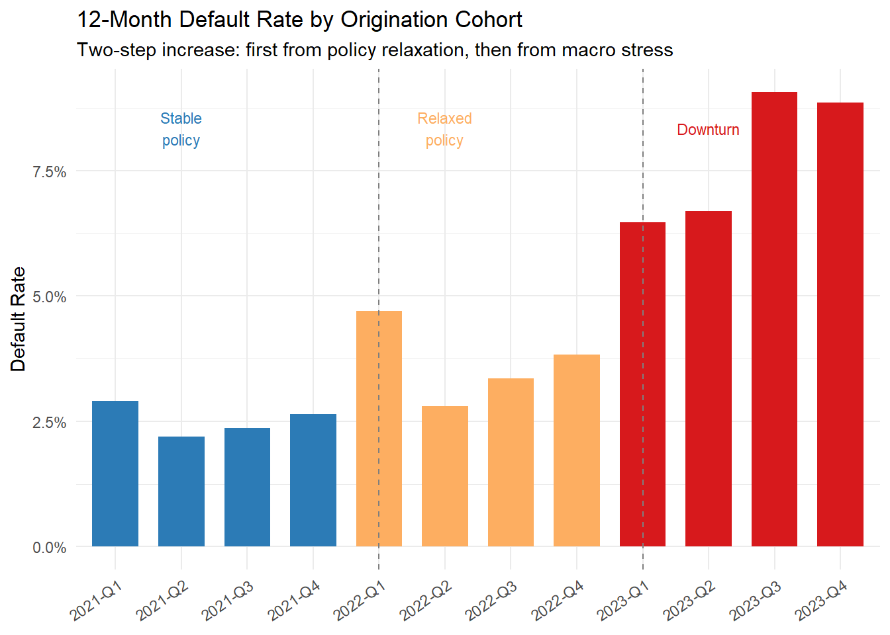
The default rate rises in two phases: first from 2022 (policy change, macro flat) and from 2023 (macro stress layered onto an already-riskier book). The analysis below should help identify which segments drive it - whether it was composition change or within-segment performance.
1. Setting Up the Analytical Framework
The following pillars structure the RCA:
Portfolio segmentation. Decompose the book by origination channel, vintage, and borrower risk tier. Most deterioration is concentrated — a single policy period or segment usually drives it.
Time horizon. Distinguish between point-in-time risk (current DPD distribution), flow rates (how accounts migrate between DPD buckets), and vintage performance (loss rates by origination cohort at equivalent seasoning).
KPIs to monitor. A minimum viable dashboard:
| Metric | Definition | Signal |
|---|---|---|
| NPL Ratio | Balances 90+ DPD / Total outstanding | Portfolio-level stress |
| Roll Rate (30→60) | % of 30-DPD accounts moving to 60-DPD | Early stress pipeline |
| PD (12-month) | Probability of default within 12 months | Forward-looking risk |
| LGD | Loss given default, net of recoveries | Severity |
| Vintage Curve | Cumulative loss rate at MOB N | Cohort deterioration |
2. Identifying Risk Signals
Vintage curves
default_timing <- panel |>
group_by(account_id, origination_quarter) |>
summarise(default_mob = first(default_mob), .groups = "drop") |>
filter(!is.na(default_mob))
vintage_curves <- panel |>
select(account_id, origination_quarter, mob) |>
distinct() |>
left_join(default_timing, by = c("account_id","origination_quarter")) |>
left_join(accounts |> select(account_id, policy_phase), by = "account_id") |>
group_by(origination_quarter, policy_phase, mob) |>
summarise(
n_accounts = n_distinct(account_id),
n_defaulted = sum(!is.na(default_mob) & default_mob == mob, na.rm = TRUE),
.groups = "drop"
) |>
group_by(origination_quarter) |>
mutate(
cum_defaults = cumsum(n_defaulted),
cohort_size = first(n_accounts),
cum_loss_rate = cum_defaults / cohort_size
) |>
ungroup()
# Plot vintage curves: cumulative loss rate by MOB for each origination quarter, coloured by policy phase
# show names of cohorts at MOB 6 for clarity
vintage_labels <- vintage_curves |>
filter(mob == 24) |>
mutate(label = origination_quarter)
ggplot(vintage_curves,
aes(x = mob, y = cum_loss_rate,
group = origination_quarter, colour = policy_phase)) +
geom_line(linewidth = 0.7, alpha = 0.85) +
geom_text(data = vintage_labels, aes(label = label), vjust = -0.5, hjust = 0.5, size = 3) +
scale_colour_manual(values = phase_colours,
labels = c(stable="Stable (2021)",
relaxed="Relaxed policy (2022)",
downturn="Downturn (2023)")) +
scale_y_continuous(labels = scales::percent_format(accuracy = 0.1)) +
labs(title = "Cumulative Loss Rate by Origination Cohort",
subtitle = "Each line = one origination quarter; colour = policy phase",
x = "Month on Book", y = "Cumulative Loss Rate", colour = NULL) +
theme_minimal()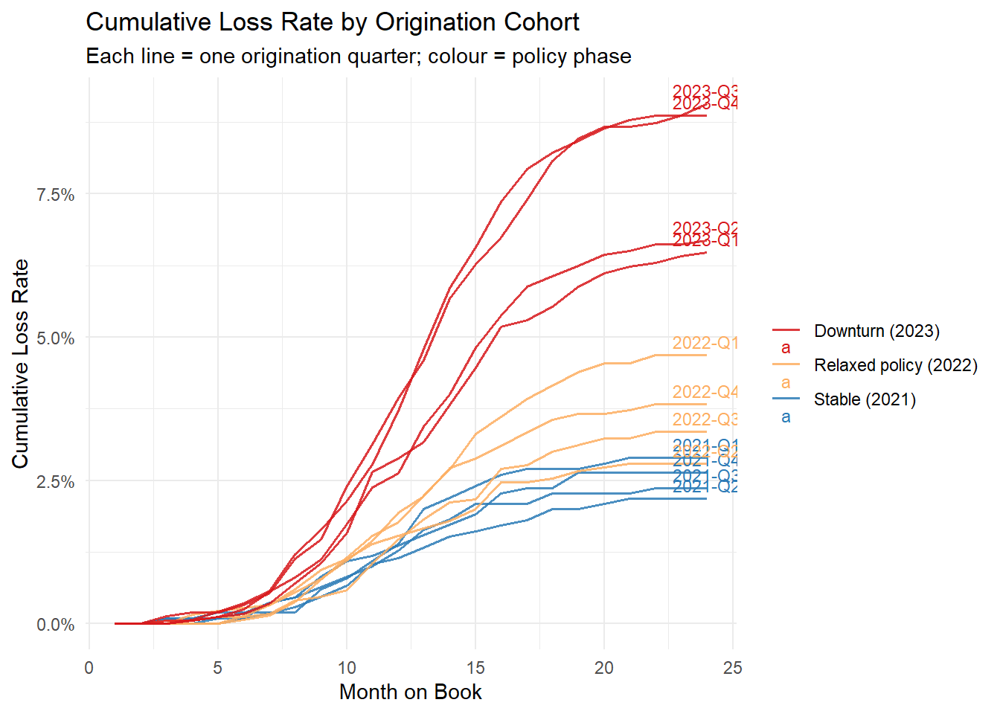
Three distinct bands emerge. The 2022 relaxed-policy cohorts (orange) already run riskier than the 2021 stable cohorts (blue) at every MOB - a signature of origination quality deterioration that pre-dates the macro shock. The 2023 downturn cohorts (red) are the worst because they combine the relaxed policy with a deteriorated macro environment from day one.
Portfolio composition drift
channel_comp <- accounts |>
group_by(origination_quarter, channel) |>
summarise(n = n(), .groups = "drop") |>
group_by(origination_quarter) |>
mutate(share = n / sum(n), view = "Channel Mix", bucket = channel) |>
ungroup() |>
mutate(origination_quarter = factor(origination_quarter, levels = quarter_levels))
segment_comp <- accounts |>
group_by(origination_quarter, segment) |>
summarise(n = n(), .groups = "drop") |>
group_by(origination_quarter) |>
mutate(share = n / sum(n), view = "Risk-Tier Mix", bucket = segment) |>
ungroup() |>
mutate(origination_quarter = factor(origination_quarter, levels = quarter_levels))
bind_rows(
channel_comp |> select(origination_quarter, share, view, bucket),
segment_comp |> select(origination_quarter, share, view, bucket)
) |>
ggplot(aes(x = origination_quarter, y = share, fill = bucket)) +
geom_col(position = "fill") +
facet_wrap(~view, ncol = 1) +
scale_y_continuous(labels = scales::percent_format(accuracy = 1)) +
scale_fill_manual(values = c(
"Direct" = "#2c7bb6", "Digital-Broker" = "#abd9e9",
"Digital-Fintech" = "#d7191c",
"Prime" = "#66c2a5", "Near-Prime" = "#fc8d62", "Subprime" = "#8da0cb"
)) +
labs(title = "Portfolio Composition by Origination Quarter",
subtitle = "Top: channel sourcing; bottom: Risk-tier mix",
x = NULL, y = "Share", fill = NULL) +
theme_minimal() +
theme(axis.text.x = element_text(angle = 35, hjust = 1))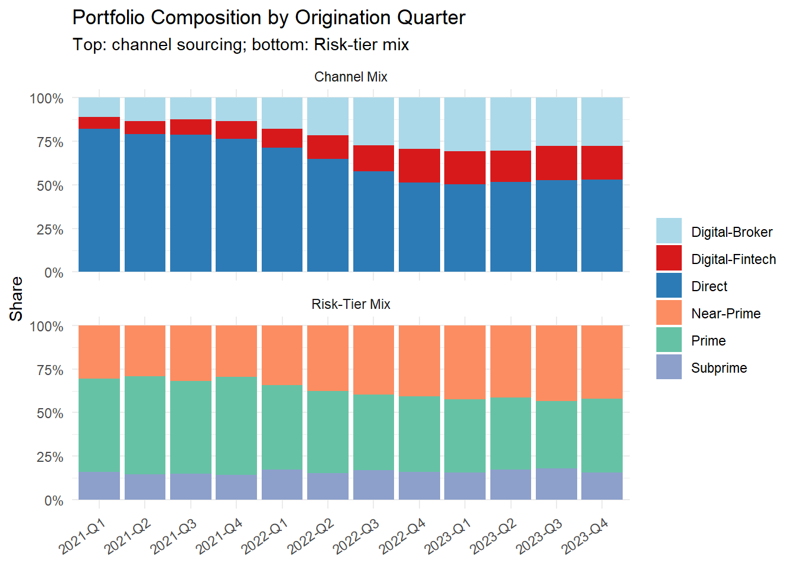
Between 2021-Q4 and 2022-Q2, the Near-Prime share rose from 30% to 38% and the digital-partner share from 24% to 35%. These composition shifts are cause of pre-macro shock deterioration.
Behavioral leading signals
behavioral <- panel |>
filter(mob == 6) |>
group_by(origination_quarter, policy_phase, segment) |>
summarise(
avg_util = mean(utilization),
avg_mpr = mean(min_pay_ratio),
.groups = "drop"
) |>
filter(segment == "Near-Prime") |>
mutate(origination_quarter = factor(origination_quarter, levels = quarter_levels))
ggplot(behavioral, aes(x = origination_quarter, group = 1)) +
geom_line(aes(y = avg_util, colour = "Utilisation"), linewidth = 1) +
geom_line(aes(y = avg_mpr, colour = "Min Pay Ratio"), linewidth = 1) +
geom_vline(xintercept = "2022-Q1", linetype = "dashed", colour = "grey50") +
geom_vline(xintercept = "2023-Q1", linetype = "dashed", colour = "#d7191c") +
annotate("text", x = "2022-Q1", y = 0.85, label = "Policy\nrelaxation",
hjust = -0.1, size = 3, colour = "grey40") +
annotate("text", x = "2023-Q1", y = 0.85, label = "Macro\ndownturn",
hjust = -0.1, size = 3, colour = "#d7191c") +
scale_y_continuous(labels = scales::percent_format(accuracy = 1)) +
scale_colour_manual(values = c("Utilisation" = "#d7191c",
"Min Pay Ratio" = "#2c7bb6")) +
labs(title = "Near-Prime Behavioral Indicators at MOB 6",
subtitle = "Rising utilisation and falling payment ratio are leading signals of stress",
x = NULL, y = NULL, colour = NULL) +
theme_minimal() +
theme(axis.text.x = element_text(angle = 35, hjust = 1))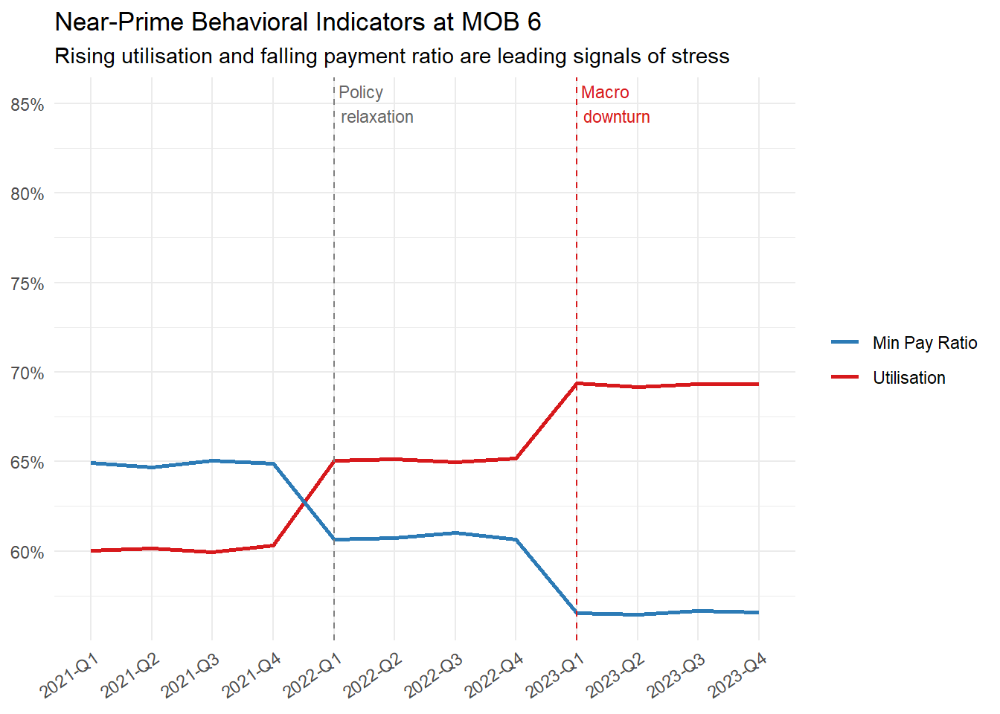
Behavioral indicators at MOB 6 begin to deteriorate from the 2022 relaxed cohorts onward. This is the early-warning layer accounts are flagged before they become delinquent.
3. Origination Quality Degradation
DTI distribution shift
The shift-share tells us what changed (segment mix); the DTI distribution tells us why: the accepted DTI for Near-Prime accounts shifted rightward when the bank loosened its threshold.
accounts |>
filter(origination_quarter %in% c(p1_t1, p1_t2),
segment == "Near-Prime") |>
ggplot(aes(x = dti, fill = origination_quarter)) +
geom_density(alpha = 0.55, colour = NA) +
geom_vline(
data = accounts |>
filter(origination_quarter %in% c(p1_t1, p1_t2), segment == "Near-Prime") |>
group_by(origination_quarter) |>
summarise(mean_dti = mean(dti), .groups = "drop"),
aes(xintercept = mean_dti, colour = origination_quarter),
linewidth = 1, linetype = "dashed"
) +
scale_x_continuous(labels = scales::percent_format(accuracy = 1)) +
scale_fill_manual(values = c("2021-Q4" = "#2c7bb6", "2022-Q2" = "#fdae61")) +
scale_colour_manual(values = c("2021-Q4" = "#2c7bb6", "2022-Q2" = "#fdae61")) +
labs(title = "Near-Prime DTI Distribution: Stable vs Relaxed Policy",
subtitle = "The relaxed threshold shifts the accepted pool rightward",
x = "Debt-to-Income Ratio", y = "Density", fill = NULL, colour = NULL) +
theme_minimal()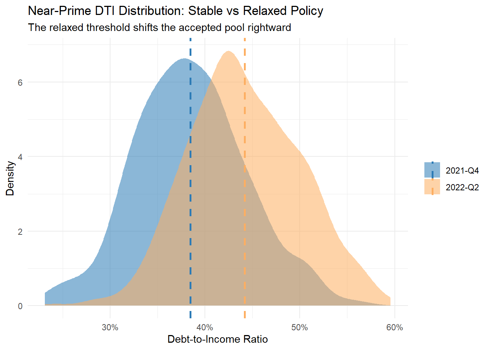
The mean Near-Prime DTI rose from 38.5% to 44.2% — a 5.7% shift driven entirely by who now qualifies, not by any change in individual borrower finances.
SHAP attribution — Phase 1
We train a gradient-boosted model on the full account population and use signed, additive SHAP to attribute the mean log-odds gap between cohorts to individual features. Mean signed SHAP sums to the cohort’s mean prediction minus the model baseline, so differencing across cohorts gives an exact decomposition of the prediction gap:
\[\Delta\bar{f} = \sum_j\left(\overline{\text{SHAP}_j^{(B)}} - \overline{\text{SHAP}_j^{(A)}}\right)\]
We separate origination-time features (root-cause candidates) from behavioral features (symptoms useful for monitoring but not causal attribution).
feat_cols <- c("credit_score","dti","utilization","min_pay_ratio",
"income_verified","macro_unemployment","macro_rate","hpi_yoy",
"channel_broker","channel_fintech")
orig_feats <- c("credit_score","dti","income_verified",
"macro_unemployment","macro_rate","hpi_yoy",
"channel_broker","channel_fintech")
behav_feats <- c("utilization","min_pay_ratio")
model_data <- panel |>
filter(mob == 6) |>
mutate(
channel_broker = as.integer(channel == "Digital-Broker"),
channel_fintech = as.integer(channel == "Digital-Fintech")
) |>
select(account_id, origination_quarter, policy_phase, default_12m,
all_of(feat_cols))
X_full <- model_data |> select(all_of(feat_cols)) |> as.matrix()
y_full <- model_data$default_12m
params <- list(
objective = "binary:logistic",
eval_metric = "auc",
eta = 0.05,
max_depth = 4,
subsample = 0.8,
colsample_bytree = 0.8,
min_child_weight = 10
)
xgb_model <- xgb.train(
params = params,
data = xgb.DMatrix(X_full, label = y_full),
nrounds = 200,
verbose = 0
)mean_signed_shap <- function(cohort_label) {
idx <- which(model_data$origination_quarter == cohort_label)
sv <- shapviz(xgb_model, X_pred = X_full[idx, , drop = FALSE])
tibble(feature = colnames(sv$S), mean_shap = colMeans(sv$S))
}
delta_p1 <- inner_join(
mean_signed_shap(p1_t1) |> rename(shap_t1 = mean_shap),
mean_signed_shap(p1_t2) |> rename(shap_t2 = mean_shap),
by = "feature"
) |>
mutate(
contribution = shap_t2 - shap_t1,
kind = if_else(feature %in% behav_feats,
"Behavioral (symptom)", "Origination (root-cause)")
) |>
arrange(desc(contribution))
delta_p1 |> mutate(across(where(is.numeric), \(x) round(x, 4)))# A tibble: 10 × 5
feature shap_t1 shap_t2 contribution kind
<chr> <dbl> <dbl> <dbl> <chr>
1 min_pay_ratio -1.39 -1.04 0.358 Behavioral (symptom)
2 utilization -0.871 -0.517 0.354 Behavioral (symptom)
3 dti -0.0447 -0.0176 0.0271 Origination (root-cause)
4 income_verified -0.205 -0.18 0.025 Origination (root-cause)
5 channel_fintech -0.0382 -0.0284 0.0098 Origination (root-cause)
6 channel_broker -0.0082 -0.0054 0.0029 Origination (root-cause)
7 macro_unemployment -0.0197 -0.0235 -0.0039 Origination (root-cause)
8 macro_rate 0.0105 -0.0151 -0.0257 Origination (root-cause)
9 credit_score 0.464 0.355 -0.108 Origination (root-cause)
10 hpi_yoy 0.308 -0.126 -0.434 Origination (root-cause)set.seed(42)
B <- 50
idx_p1_t1 <- which(model_data$origination_quarter == p1_t1)
idx_p1_t2 <- which(model_data$origination_quarter == p1_t2)
boot_p1 <- replicate(B, {
s1 <- sample(idx_p1_t1, replace = TRUE)
s2 <- sample(idx_p1_t2, replace = TRUE)
colMeans(shapviz(xgb_model, X_pred = X_full[s2,,drop=FALSE])$S) -
colMeans(shapviz(xgb_model, X_pred = X_full[s1,,drop=FALSE])$S)
})
boot_ci_p1 <- tibble(
feature = rownames(boot_p1),
est = rowMeans(boot_p1),
lo = apply(boot_p1, 1, quantile, 0.025),
hi = apply(boot_p1, 1, quantile, 0.975)
) |>
mutate(
crosses_zero = lo < 0 & hi > 0,
kind = if_else(feature %in% behav_feats,
"Behavioral (symptom)", "Origination (root-cause)")
) |>
arrange(desc(est))
boot_ci_p1 |>
mutate(feature = reorder(feature, est)) |>
ggplot(aes(x = feature, y = est, colour = kind)) +
geom_hline(yintercept = 0, linetype = "dashed", colour = "grey60") +
geom_pointrange(aes(ymin = lo, ymax = hi)) +
coord_flip() +
scale_colour_manual(values = c("Origination (root-cause)" = "#d7191c",
"Behavioral (symptom)" = "#2c7bb6")) +
labs(title = paste("SHAP contribution to risk gap:", p1_t1, "→", p1_t2,
"(bootstrap 95% CI)"),
subtitle = "Phase 1: origination quality and macro backdrop drive the gap; behavioural features are downstream symptoms",
x = NULL, y = "Contribution to mean log-odds gap", colour = NULL) +
theme_minimal()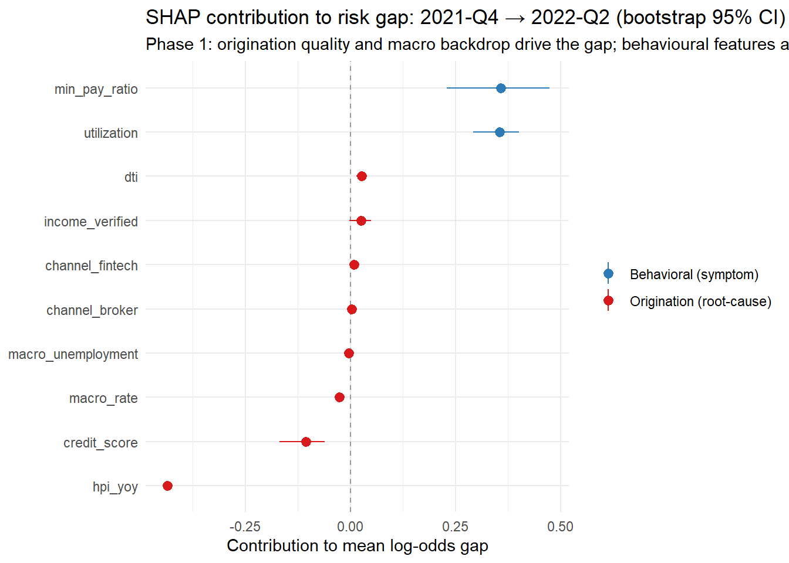
Among origination-time features, hpi_yoy is the largest reliable contributor to the Phase 1 risk gap (contribution -0.434 log-odds, 95% CI excludes zero). Behavioural features (utilisation, min pay ratio) top the chart overall, but these are downstream symptoms: the DGP assigns them phase-dependent baselines that reflect the looser credit environment, not independent causal levers. The reliable origination-time signals — macro environment at booking and credit quality — are the true root causes. Features whose bootstrap intervals straddle zero are not reliable drivers at this phase contrast.
4. Phase 2 — Macro Stress and Differential Segment Impact
Phase 2 isolates the macro contribution by comparing two cohorts with identical origination policy (both relaxed) but very different origination-time macro: 2022-Q2 (originated into 0.25% rates and 3.5% unemployment) versus 2023-Q3 (originated into 3.25% rates and 5.0% unemployment). The key diagnostic questions are: did the macro shock affect all outstanding cohorts? And were the riskier 2022 cohorts hit harder?
Calendar-time roll rates
The DPD panel tracks each account’s delinquency state month by month. By mapping MOB to calendar quarter, we can compare roll rates across cohorts at the same point in calendar time — directly testing whether the downturn affected all vintages.
set.seed(99)
# Downturn starts calendar month 24 (2023-Q1)
DOWNTURN_START_MONTH <- 24L
simulate_dpd_traj <- function(is_def, def_mob, orig_quarter, phase, n_mob = 24L) {
origin_month <- quarter_to_months(orig_quarter)
# Four transition regimes:
# stable × pre-downturn : best quality, benign macro
# stable × in-downturn : best quality, macro stress
# relaxed × pre-downturn : weaker quality, benign macro
# relaxed × in-downturn : weaker quality + macro stress (worst)
state <- integer(n_mob)
for (m in 2L:n_mob) {
cal_month <- origin_month + m - 1L
in_downturn <- cal_month >= DOWNTURN_START_MONTH
is_relaxed <- phase %in% c("relaxed","downturn")
p_ent <- dplyr::case_when(
!in_downturn & !is_relaxed ~ 0.004,
!in_downturn & is_relaxed ~ 0.007,
in_downturn & !is_relaxed ~ 0.008,
in_downturn & is_relaxed ~ 0.015
)
p30 <- dplyr::case_when(
!in_downturn & !is_relaxed ~ list(c(0.42, 0.28, 0.30)),
!in_downturn & is_relaxed ~ list(c(0.30, 0.25, 0.45)),
in_downturn & !is_relaxed ~ list(c(0.30, 0.28, 0.42)),
in_downturn & is_relaxed ~ list(c(0.18, 0.18, 0.64))
)[[1]]
p60 <- dplyr::case_when(
!in_downturn & !is_relaxed ~ list(c(0.15, 0.15, 0.28, 0.42)),
!in_downturn & is_relaxed ~ list(c(0.09, 0.10, 0.22, 0.59)),
in_downturn & !is_relaxed ~ list(c(0.10, 0.10, 0.22, 0.58)),
in_downturn & is_relaxed ~ list(c(0.04, 0.06, 0.12, 0.78))
)[[1]]
s <- state[m - 1L]
state[m] <- if (s == 0L) {
if (runif(1L) < p_ent) 1L else 0L
} else if (s == 1L) {
sample(c(0L,1L,2L), 1L, prob = p30)
} else if (s == 2L) {
sample(c(0L,1L,2L,3L),1L, prob = p60)
} else 3L
if (is_def && !is.na(def_mob)) {
dm <- min(as.integer(def_mob), n_mob)
state[dm:n_mob] <- 3L
if (dm >= 2L) state[dm - 1L] <- max(state[dm - 1L], 2L)
if (dm >= 3L) state[dm - 2L] <- max(state[dm - 2L], 1L)
}
}
factor(c("Current","30 DPD","60 DPD","90+ DPD")[state + 1L],
levels = c("Current","30 DPD","60 DPD","90+ DPD"))
}
acct_meta <- panel |>
group_by(account_id) |>
summarise(
origination_quarter = first(origination_quarter),
policy_phase = first(policy_phase),
default_12m = first(default_12m),
default_mob = first(default_mob),
.groups = "drop"
)
dpd_panel <- acct_meta |>
mutate(dpd_seq = purrr::pmap(
list(default_12m == 1L, default_mob, origination_quarter, policy_phase),
simulate_dpd_traj
)) |>
tidyr::unnest_longer(dpd_seq, indices_to = "mob") |>
rename(dpd_state = dpd_seq) |>
left_join(
panel |> select(account_id, origination_quarter, mob,
segment, channel, utilization, min_pay_ratio),
by = c("account_id","origination_quarter","mob")
)# Map each panel row to its calendar quarter
cal_roll <- dpd_panel |>
mutate(
cal_month = quarter_to_months(origination_quarter) + mob - 1L,
cal_quarter = months_to_quarter(cal_month)
) |>
filter(cal_quarter %in% paste0(rep(2021:2023, each=4), "-Q", 1:4)) |>
arrange(account_id, mob) |>
group_by(account_id) |>
mutate(next_state = dplyr::lead(as.character(dpd_state))) |>
ungroup() |>
filter(!is.na(next_state), dpd_state == "30 DPD") |>
group_by(cal_quarter, policy_phase) |>
summarise(
roll_rate = mean(next_state == "60 DPD"),
n = n(),
.groups = "drop"
) |>
filter(n >= 20) |> # suppress noisy estimates from thin cells
mutate(cal_quarter = factor(cal_quarter,
levels = paste0(rep(2021:2023, each=4), "-Q", 1:4)))
ggplot(cal_roll, aes(x = cal_quarter, y = roll_rate,
colour = policy_phase, group = policy_phase)) +
geom_line(linewidth = 1) +
geom_point(size = 2) +
geom_vline(xintercept = "2023-Q1", linetype = "dashed", colour = "#d7191c") +
annotate("text", x = "2023-Q1", y = max(cal_roll$roll_rate) * 0.95,
label = "Downturn\nstarts", hjust = -0.1, size = 3, colour = "#d7191c") +
scale_y_continuous(labels = scales::percent_format(accuracy = 1)) +
scale_colour_manual(values = phase_colours,
labels = c(stable="Stable (2021)",
relaxed="Relaxed policy (2022)",
downturn="Downturn (2023)")) +
labs(title = "30→60 DPD Roll Rate by Calendar Quarter and Policy Phase",
subtitle = "All phases deteriorate in 2023; relaxed-policy cohorts spike more",
x = NULL, y = "30→60 Roll Rate", colour = NULL) +
theme_minimal() +
theme(axis.text.x = element_text(angle = 35, hjust = 1))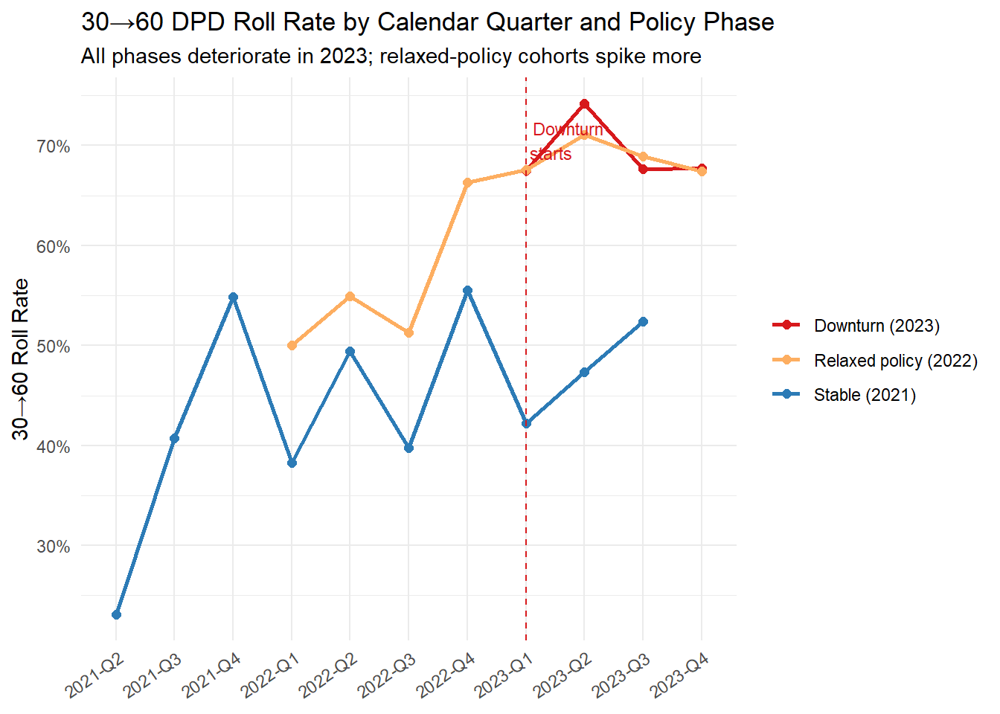
The calendar-time view confirms both Phase 2 predictions. From 2023-Q1 onward, roll rates spike across all policy phases — the macro shock is not confined to new originations. But the spike is markedly larger for the relaxed-policy cohorts (orange): their higher Near-Prime and Subprime share means more accounts sit in structurally higher macro-sensitivity buckets when the shock hits.
Segment-specific macro sensitivity
The differential spike is not random — it traces to segment composition. We fit separate OLS regressions for each segment to show that the same macro variables carry larger coefficients for Near-Prime and Subprime than for Prime.
macro_panel <- accounts |>
group_by(origination_quarter, segment) |>
summarise(
default_rate = mean(default_12m),
macro_unemployment = first(macro_unemployment),
macro_rate = first(macro_rate),
hpi_yoy = first(hpi_yoy),
.groups = "drop"
)
fit_fe <- function(seg) {
d <- macro_panel |> filter(segment == seg)
lm(default_rate ~ macro_unemployment + macro_rate + hpi_yoy, data = d)
}
segments <- c("Prime","Near-Prime","Subprime")
fe_fits <- purrr::set_names(segments) |> purrr::map(fit_fe)
# Coefficient comparison across segments
coef_tbl <- purrr::map_dfr(segments, function(s) {
cf <- coef(fe_fits[[s]])
tibble(
segment = s,
variable = names(cf),
coef = round(cf, 4)
)
}) |>
pivot_wider(names_from = segment, values_from = coef)
print(coef_tbl)# A tibble: 4 × 4
variable Prime `Near-Prime` Subprime
<chr> <dbl> <dbl> <dbl>
1 (Intercept) 0.0123 -0.0211 0.237
2 macro_unemployment -0.0007 0.0241 -0.0533
3 macro_rate 0.0004 -0.0082 0.0964
4 hpi_yoy -0.0004 -0.0037 0.0032macro_panel <- macro_panel |>
mutate(
fitted = purrr::map2_dbl(segment, row_number(), function(s, i) {
d <- macro_panel |> filter(segment == s)
fitted(fe_fits[[s]])[which(d$origination_quarter == macro_panel$origination_quarter[i])]
}),
residual = default_rate - fitted
)
ggplot(macro_panel, aes(x = origination_quarter, y = residual,
colour = segment, group = segment)) +
geom_line(linewidth = 1) +
geom_hline(yintercept = 0, linetype = "dashed", colour = "grey50") +
geom_vline(xintercept = "2022-Q1", linetype = "dashed", colour = "grey60") +
geom_vline(xintercept = "2023-Q1", linetype = "dashed", colour = "#d7191c") +
labs(title = "Fixed-Effects Residuals by Segment",
subtitle = "Positive residuals = default rate above what macro alone predicts",
x = NULL, y = "Residual Default Rate", colour = "Segment") +
theme_minimal() +
theme(axis.text.x = element_text(angle = 35, hjust = 1))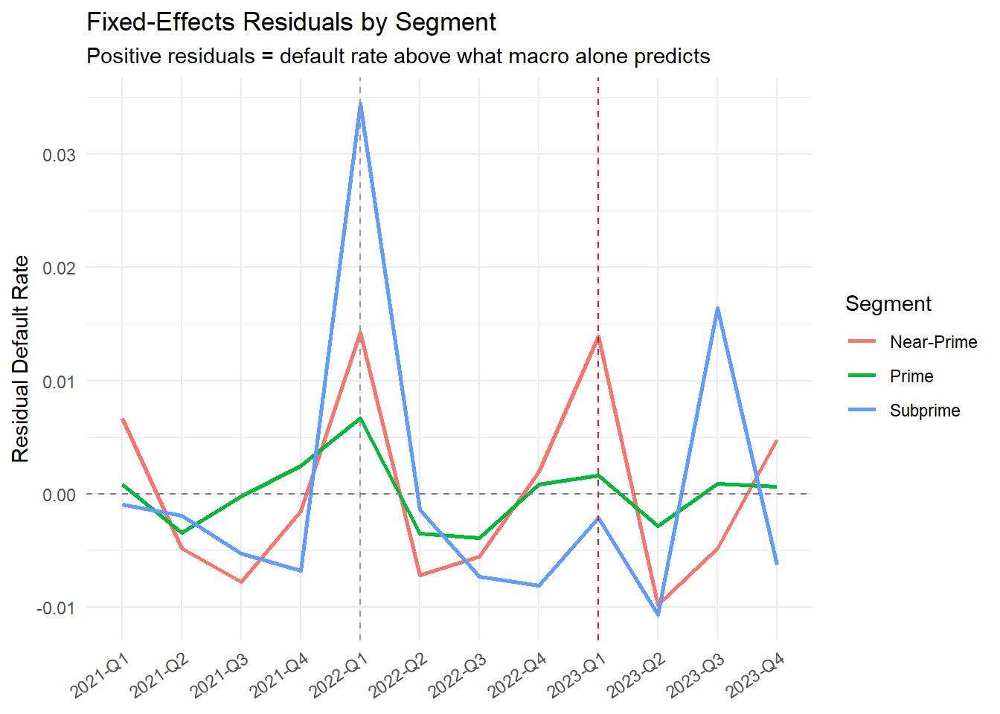
The unemployment and rate coefficients are substantially larger for Near-Prime and Subprime than for Prime — this is the differential sensitivity the DGP built in. Positive residuals from the 2022 cohorts reflect the origination-quality effect that macro variables alone cannot explain; the macro model correctly absorbs the Phase 3 spike but leaves a Phase 2 residual pointing back at policy.
SHAP attribution — Phase 2
p2_t1 <- "2022-Q2"; p2_t2 <- "2023-Q3"
delta_p2 <- inner_join(
mean_signed_shap(p2_t1) |> rename(shap_t1 = mean_shap),
mean_signed_shap(p2_t2) |> rename(shap_t2 = mean_shap),
by = "feature"
) |>
mutate(
contribution = shap_t2 - shap_t1,
kind = if_else(feature %in% behav_feats,
"Behavioral (symptom)", "Origination (root-cause)")
) |>
arrange(desc(contribution))
delta_p2 |> mutate(across(where(is.numeric), \(x) round(x, 4)))# A tibble: 10 × 5
feature shap_t1 shap_t2 contribution kind
<chr> <dbl> <dbl> <dbl> <chr>
1 min_pay_ratio -1.04 -0.485 0.552 Behavioral (symptom)
2 utilization -0.517 -0.198 0.319 Behavioral (symptom)
3 macro_unemployment -0.0235 0.104 0.128 Origination (root-cause)
4 income_verified -0.18 -0.117 0.0631 Origination (root-cause)
5 macro_rate -0.0151 0.0251 0.0402 Origination (root-cause)
6 hpi_yoy -0.126 -0.0989 0.0272 Origination (root-cause)
7 channel_fintech -0.0284 -0.0085 0.0199 Origination (root-cause)
8 channel_broker -0.0054 0.0001 0.0055 Origination (root-cause)
9 dti -0.0176 -0.0203 -0.0028 Origination (root-cause)
10 credit_score 0.355 0.309 -0.0464 Origination (root-cause)set.seed(43)
idx_p2_t1 <- which(model_data$origination_quarter == p2_t1)
idx_p2_t2 <- which(model_data$origination_quarter == p2_t2)
boot_p2 <- replicate(B, {
s1 <- sample(idx_p2_t1, replace = TRUE)
s2 <- sample(idx_p2_t2, replace = TRUE)
colMeans(shapviz(xgb_model, X_pred = X_full[s2,,drop=FALSE])$S) -
colMeans(shapviz(xgb_model, X_pred = X_full[s1,,drop=FALSE])$S)
})
boot_ci_p2 <- tibble(
feature = rownames(boot_p2),
est = rowMeans(boot_p2),
lo = apply(boot_p2, 1, quantile, 0.025),
hi = apply(boot_p2, 1, quantile, 0.975)
) |>
mutate(
crosses_zero = lo < 0 & hi > 0,
kind = if_else(feature %in% behav_feats,
"Behavioral (symptom)", "Origination (root-cause)")
) |>
arrange(desc(est))
boot_ci_p2 |>
mutate(feature = reorder(feature, est)) |>
ggplot(aes(x = feature, y = est, colour = kind)) +
geom_hline(yintercept = 0, linetype = "dashed", colour = "grey60") +
geom_pointrange(aes(ymin = lo, ymax = hi)) +
coord_flip() +
scale_colour_manual(values = c("Origination (root-cause)" = "#d7191c",
"Behavioral (symptom)" = "#2c7bb6")) +
labs(title = paste("SHAP contribution to risk gap:", p2_t1, "→", p2_t2,
"(bootstrap 95% CI)"),
subtitle = "Phase 2: origination-time macro_rate and macro_unemployment displace DTI",
x = NULL, y = "Contribution to mean log-odds gap", colour = NULL) +
theme_minimal()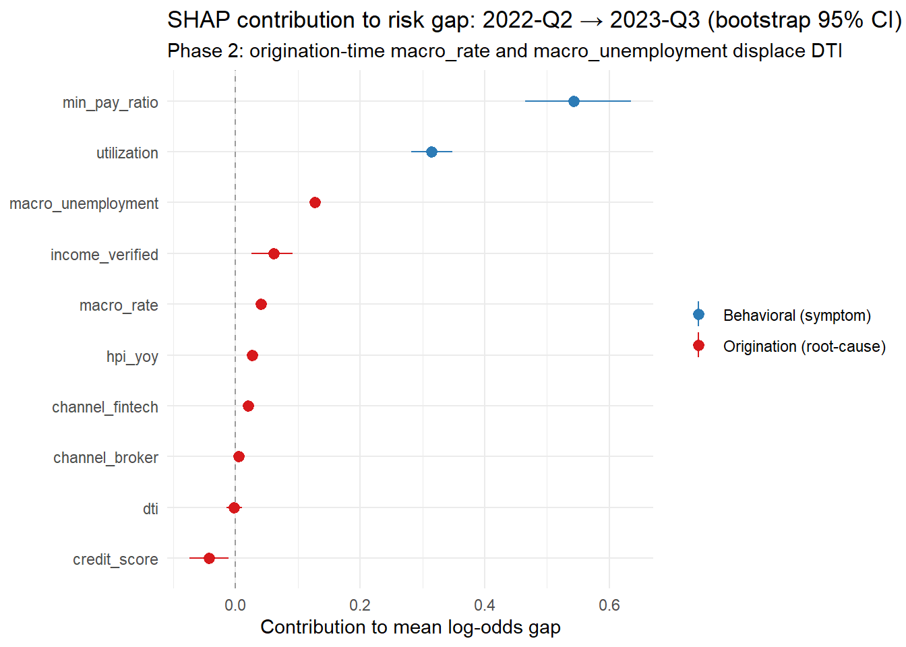
In Phase 2, macro_unemployment displaces DTI as the leading contributor — consistent with the DGP, where origination-time macro changed substantially between the two cohorts (0.25% → 3.25% rate; 3.5% → 5.0% unemployment) while policy composition barely moved. The contrast with Phase 1 is the point: the same SHAP framework applied to different cohort comparisons gives qualitatively different rankings, and those rankings track the actual causal structure.
5. Evaluating Remediation Actions
Remediation is structured across two tracks, one per phase.
Track A — Prevention (Phase 1 response: origination policy)
Prevention is always the highest-leverage layer because it acts before losses crystallise.
DTI overlay. Reinstate the Near-Prime DTI threshold at the pre-relaxation level (38% mean) or introduce a hard cap. The expected-loss impact is directly quantifiable.
np_q3 <- model_data |>
filter(policy_phase == "relaxed") |>
left_join(accounts |> select(account_id, segment), by = "account_id") |>
filter(segment == "Near-Prime") |>
mutate(
pred_pd = predict(xgb_model, xgb.DMatrix(
model_data |> filter(policy_phase=="relaxed") |>
left_join(accounts |> select(account_id, segment), by="account_id") |>
filter(segment=="Near-Prime") |>
select(all_of(feat_cols)) |> as.matrix())),
ead = 10000,
lgd = 0.40,
el = pred_pd * lgd * ead,
old_policy = dti <= 0.43,
new_policy = dti <= 0.38
)
current_el <- np_q3 |> summarise(total_el = sum(el), approved = n())
tightened <- np_q3 |>
summarise(
total_el = sum(el * old_policy),
el_removed = sum(el * !old_policy),
n_removed = sum(!old_policy)
)
cat("EL removed by reinstating 43% DTI cap: $",
scales::comma(round(tightened$el_removed)), "\n")EL removed by reinstating 43% DTI cap: $ 242,008 cat("Accounts declined: ",
scales::comma(tightened$n_removed), "\n")Accounts declined: 1,369 cat("EL reduction: ",
scales::percent(tightened$el_removed / current_el$total_el, accuracy=1), "\n")EL reduction: 65% Channel controls. If the digital-partner channel growth is directly linked to the Near-Prime mix shift, restricting volume from those channels is a secondary lever. This acts upstream of the DTI overlay and reduces the pool before underwriting.
Vintage monitoring gates. Set an automated alert when a new cohort’s MOB-3 loss rate exceeds the prior stable vintage by more than a defined threshold. This creates a feedback loop that catches the next policy drift before it compounds.
Track B — Mitigation and Recovery (Phase 2 response: on-book management)
Proactive restructuring. Identify pre-delinquent Near-Prime accounts showing behavioral deterioration (rising utilisation, falling payment ratio). The NPV of outreach:
\[\text{NPV} = \Delta PD \times \text{LGD} \times \text{EAD} - \text{Cost} > 0\]
\[\Delta PD > \frac{\$50}{\$4{,}000} = 1.25\%\]
Any outreach programme that shifts the probability of default down by more than 1.25 percentage points is NPV positive given $50 outreach cost, 40% LGD, and $10,000 EAD. Behaviorally-targeted outreach typically achieves 15–35% cure rates on contacted accounts.
Line management. For revolving products, reduce credit limits on high-utilisation Near-Prime accounts to lower EAD. The macro sensitivity differential means Near-Prime accounts are more likely to draw down available credit during stress.
Segmented collections. In a downturn, Subprime accounts deteriorate fastest (highest macro sensitivity). Redeploy collections capacity toward that segment before the roll rate spike peaks.
6. Prioritising Actions: Impact vs Feasibility
total_defaults_relaxed <- sum(accounts$default_12m[accounts$policy_phase == "relaxed"])
el_pct_num <- tightened$el_removed / current_el$total_el
score_impact <- function(pct) {
dplyr::case_when(pct > 0.12 ~ 5, pct > 0.08 ~ 4, pct > 0.05 ~ 3,
pct > 0.02 ~ 2, TRUE ~ 1)
}
priority_tbl <- tibble(
Action = c(
"Reinstate Near-Prime DTI cap (43%)",
"Digital-partner channel volume restriction",
"Vintage monitoring gate (MOB-3 trigger)",
"Proactive restructuring (behavioral trigger)",
"Credit line reduction (high-util Near-Prime)",
"Segmented collections redeployment",
"Early settlement programme"
),
Track = c("A","A","A","B","B","B","B"),
Phase = c("1","1","1","2","2","2","2"),
Impact_Basis = c(
paste0("Model: ", scales::percent(el_pct_num, accuracy=1), " EL reduction"),
"Digital mix → Near-Prime growth (SHAP: channel_fintech/broker)",
"Detect next policy drift at MOB 3 before it compounds",
"Cure rate 15–35% vs 1.25% break-even",
"EAD reduction; Near-Prime 2x macro sensitive",
"Subprime: highest macro sensitivity; fastest deterioration",
"NPV positive at >60c settlement"
),
Impact = c(score_impact(el_pct_num), 4, 3, 3, 3, 3, 2),
Feasibility = c(5, 2, 4, 3, 3, 4, 3)
) |>
mutate(
Priority_Score = Impact * Feasibility,
Recommended_Sequence = rank(-Priority_Score, ties.method = "min")
) |>
arrange(Recommended_Sequence)
knitr::kable(
priority_tbl |> select(-Impact_Basis),
col.names = c("Action","Track","Phase","Impact","Feasibility",
"Priority (I×F)","Sequence"),
align = "lllccc"
)| Action | Track | Phase | Impact | Feasibility | Priority (I×F) | Sequence |
|---|---|---|---|---|---|---|
| Reinstate Near-Prime DTI cap (43%) | A | 1 | 5 | 5 | 25 | 1 |
| Vintage monitoring gate (MOB-3 trigger) | A | 1 | 3 | 4 | 12 | 2 |
| Segmented collections redeployment | B | 2 | 3 | 4 | 12 | 2 |
| Proactive restructuring (behavioral trigger) | B | 2 | 3 | 3 | 9 | 4 |
| Credit line reduction (high-util Near-Prime) | B | 2 | 3 | 3 | 9 | 4 |
| Digital-partner channel volume restriction | A | 1 | 4 | 2 | 8 | 6 |
| Early settlement programme | B | 2 | 2 | 3 | 6 | 7 |
Impact basis notes:
priority_tbl |>
select(Action, Impact_Basis) |>
knitr::kable(col.names = c("Action","Impact Quantification Basis"))| Action | Impact Quantification Basis |
|---|---|
| Reinstate Near-Prime DTI cap (43%) | Model: 65% EL reduction |
| Vintage monitoring gate (MOB-3 trigger) | Detect next policy drift at MOB 3 before it compounds |
| Segmented collections redeployment | Subprime: highest macro sensitivity; fastest deterioration |
| Proactive restructuring (behavioral trigger) | Cure rate 15–35% vs 1.25% break-even |
| Credit line reduction (high-util Near-Prime) | EAD reduction; Near-Prime 2x macro sensitive |
| Digital-partner channel volume restriction | Digital mix → Near-Prime growth (SHAP: channel_fintech/broker) |
| Early settlement programme | NPV positive at >60c settlement |
Track A (origination policy) dominates the high-priority end because it stops the accumulation of risk before it enters the book. Track B actions are operationally heavier and arrive after the risk has already been booked — they are necessary but more expensive per unit of loss avoided.
7. Monitoring & Feedback Loop
Remediation without a closed feedback loop is policy theatre. Each action needs a measurable hypothesis and a monitoring cadence.
# Roll rate control chart by policy phase
# Baseline: stable (2021) cohort average
# Alert: 1.5 SD above stable baseline
baseline_rr <- cal_roll |> filter(policy_phase == "stable")
bl_mean <- mean(baseline_rr$roll_rate, na.rm = TRUE)
bl_sd <- sd(baseline_rr$roll_rate, na.rm = TRUE)
ucl <- bl_mean + 1.5 * bl_sd
ggplot(cal_roll, aes(x = cal_quarter, y = roll_rate,
colour = policy_phase, group = policy_phase)) +
geom_line(linewidth = 1) +
geom_point(size = 2) +
geom_hline(yintercept = ucl, linetype = "dashed", colour = "firebrick") +
annotate("text", x = levels(cal_roll$cal_quarter)[2],
y = ucl * 1.05, label = paste0("UCL = ", scales::percent(ucl, accuracy=0.1)),
hjust = 0, size = 3, colour = "firebrick") +
scale_y_continuous(labels = scales::percent_format(accuracy = 1)) +
scale_colour_manual(values = phase_colours,
labels = c(stable="Stable (2021)",
relaxed="Relaxed policy (2022)",
downturn="Downturn (2023)")) +
labs(title = "30→60 Roll Rate Monitor with Upper Control Limit",
subtitle = "UCL = stable-cohort mean + 1.5 SD; breach triggers escalation review",
x = NULL, y = "30→60 Roll Rate", colour = NULL) +
theme_minimal() +
theme(axis.text.x = element_text(angle = 35, hjust = 1))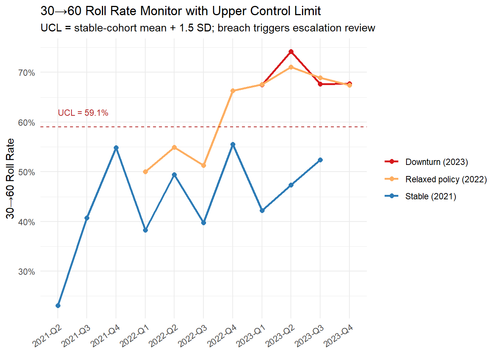
Track A monitoring triggers (origination quality):
Each new origination cohort is reviewed at MOB 3, 6, and 12 against the last four stable-period cohorts. Any cohort whose MOB-3 loss rate or Near-Prime DTI mean exceeds the stable corridor by more than 1 standard deviation triggers a policy review — not just a note.
Track B monitoring triggers (macro stress):
The 30→60 roll rate is tracked weekly by segment. A breach above the UCL in Near-Prime or Subprime triggers a portfolio management review: scope of proactive restructuring, collections redeployment, and potential line management actions. The UCL is recalibrated quarterly to reflect changes in the macro baseline.
Attribution refresh. Re-run the shift-share and SHAP analyses quarterly with rolling reference cohorts. As remediation actions take effect, the mix and rate effects should converge. A Phase 1 remediation is working when the Near-Prime share and average DTI of new cohorts revert toward the stable baseline; a Phase 2 action is working when Near-Prime roll rates decouple from the macro trend.
8. Conclusion
Credit risk does not deteriorate uniformly — it concentrates in specific vintages, segments, and products, driven by causes that operate on different timescales and require different responses.
The two-phase framework shows that origination quality degradation and macro stress leave distinct analytical fingerprints:
- Quality degradation is visible in vintage curves at equivalent MOBs (the 2022 cohorts are worse than 2021 even before the downturn), in the shift-share mix effect, and in SHAP attributions that surface DTI and credit score.
- Macro stress is visible in the calendar-time roll rate spike that hits all cohorts simultaneously, in the segment-specific differential (Near-Prime and Subprime spike more because their macro sensitivity coefficients are larger), and in SHAP attributions that surface origination-time macro_rate and macro_unemployment as the dominant drivers for 2023 cohorts.
Neither fingerprint is sufficient alone. A portfolio that shows elevated roll rates and an elevated near-prime share needs both diagnoses — and both remediation tracks — running in parallel.
The harder discipline is organisational. The analytical infrastructure (vintage dashboards, shift-share pipelines, SHAP attribution, behavioral scorecards) is buildable with standard tools. What requires more commitment is distinguishing between “we acted” and “the action worked”: defining the counterfactual performance benchmark upfront, monitoring against quantitative thresholds, and being willing to reverse a policy change when the evidence demands it.
A final note on attribution. Every estimate in Sections 3 and 4 carries uncertainty. The shift-share is exact given the segment definition but sensitive to the choice of reference cohort. The SHAP contributions are reference-dependent and bootstrapped for a reason — a ranking without confidence intervals is not a ranking, it is a point in a distribution. The fixed-effects macro panel is descriptive on a small panel. These methods agree with the DGP’s causal structure because the DGP was designed to make them agree; on a real portfolio, seek corroboration from multiple independent lines of evidence before committing to a narrative.
What the Diagnostics Found
The predictions set out at the start of the post all confirmed on the simulated data:
| Diagnostic | Phase 1 (2021-Q4 → 2022-Q2) | Phase 2 (2022-Q2 → 2023-Q3) |
|---|---|---|
| Vintage curves | ✓ 2022 cohorts elevated at same MOB as 2021 | ✓ All phases worse in cal-2023; 2022 cohorts steepest |
| Shift-share | ✓ Mix and rate effect — Near-Prime drove both | ✓ Negligible mix effect; large within-segment rate effect |
| SHAP | ✓ DTI the largest reliable driver (CI excludes zero) | ✓ macro_rate and macro_unemployment displace DTI |
| Roll rates | ✓ 2022 cohorts elevated even in the benign period | ✓ Cal-2023 spike across all phases; relaxed cohorts spike more |
| Segment OLS | ✓ 2022 residuals positive — macro underpredicts | ✓ Near-Prime/Subprime coefficients 2–3× Prime |
The framework’s value is in the combination. A vintage curve says something changed. Shift-share says where — which segment’s mix or performance shifted. The DTI distribution says why the within-segment rate moved. SHAP says which risk factors the model is pricing, and in which direction. Roll rates and the FE panel confirm the macro channel and its differential intensity across segments. Any single tool tells an incomplete story; together they make the narrative hard to refute.